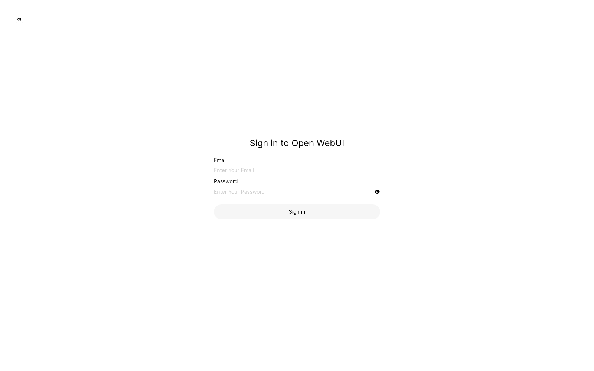
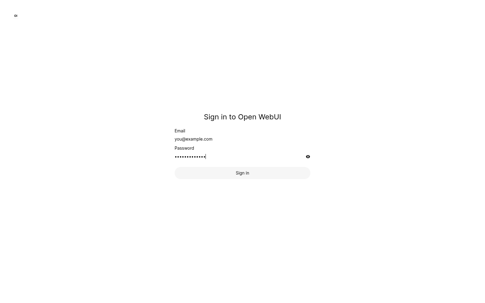
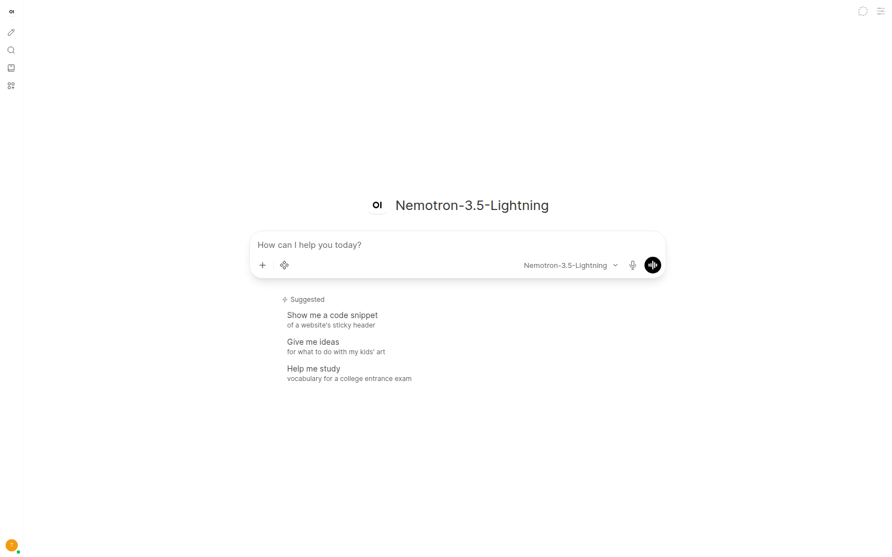
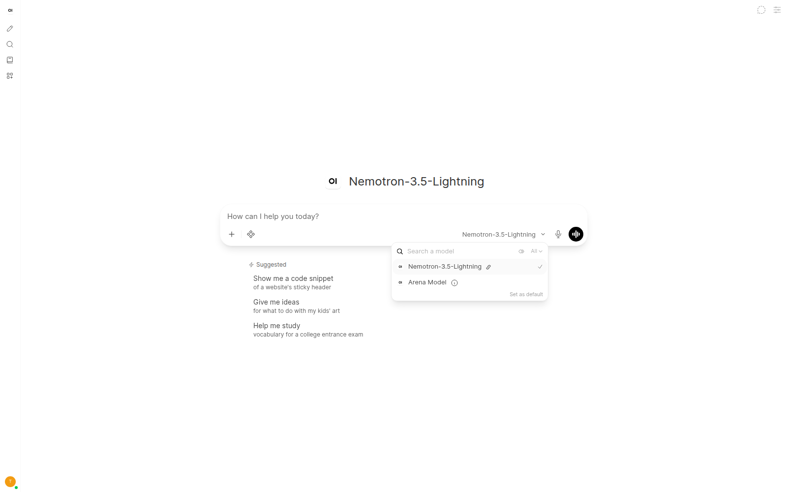
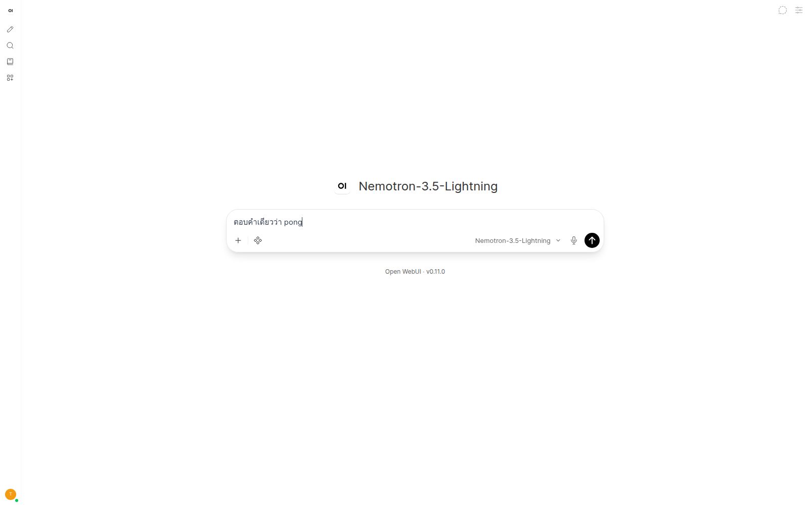
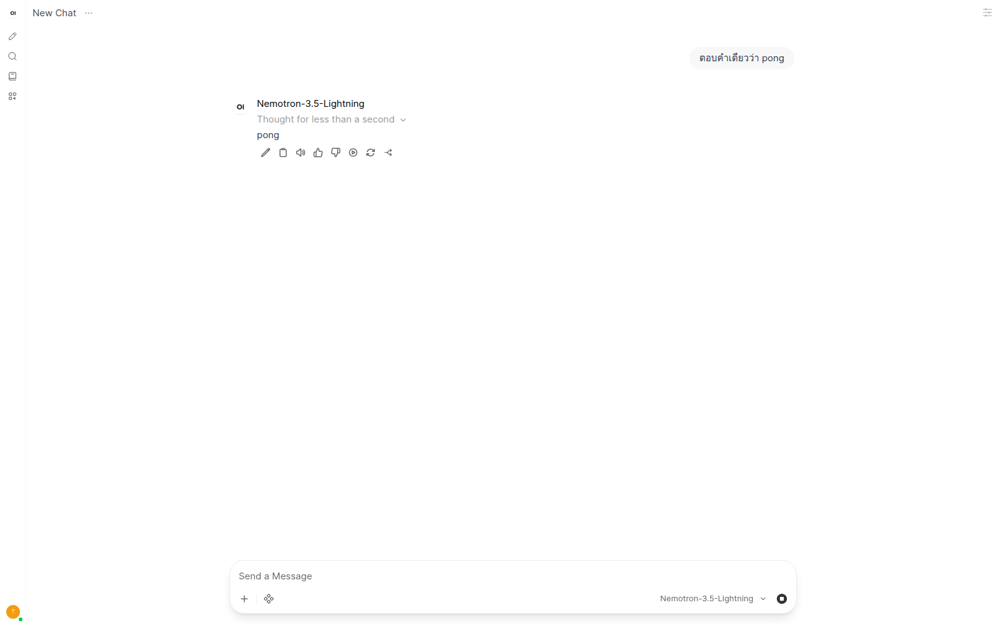
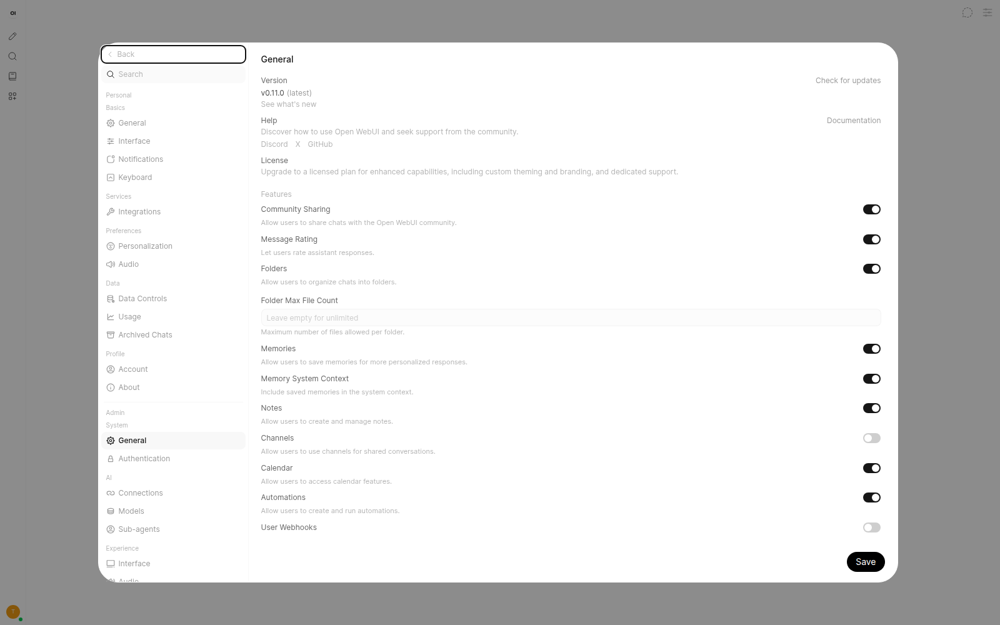
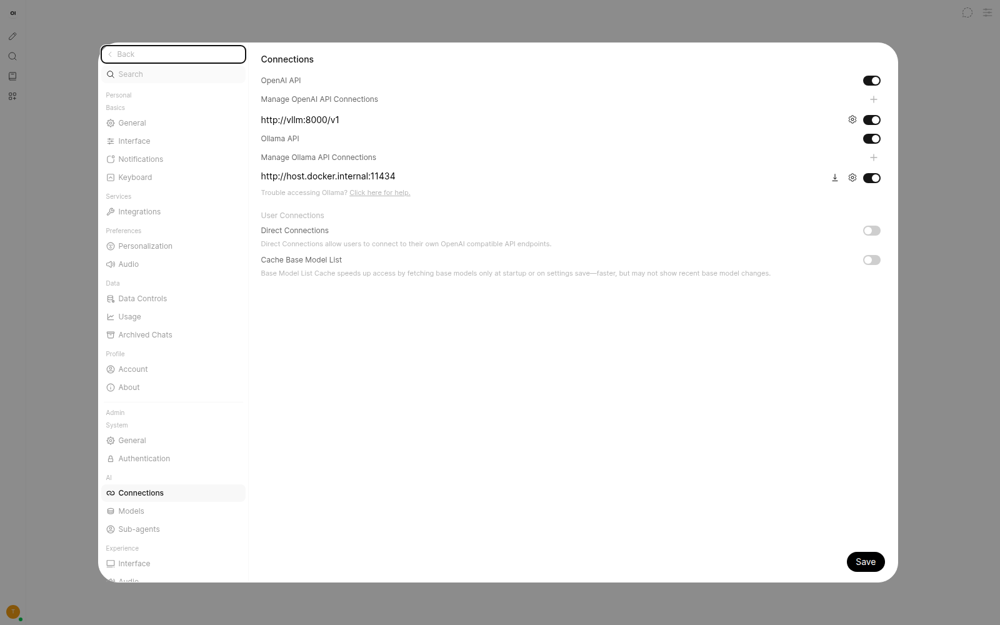
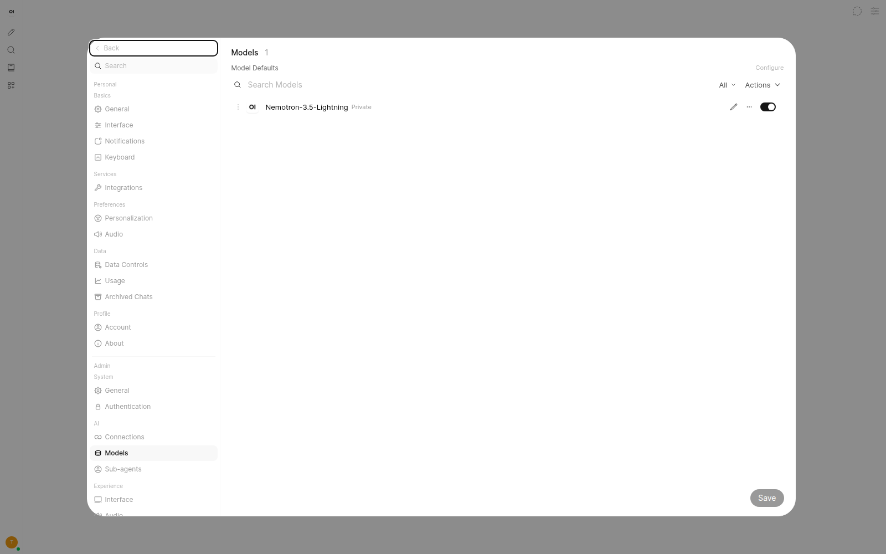

ใช้ Open WebUI คุยกับโมเดล
หน้านี้สอนเฉพาะหน้าเว็บแชท การเปิดโมเดลขึ้น RAM อยู่หมวดโมเดล คนละหน้าที่กัน
ขั้นที่ 1 เปิดหน้าเว็บแชท
- เปิดเบราว์เซอร์
บนเครื่อง DGX เปิด Firefox หรือ Chrome จากแถบแอป
- คลิกแถบที่อยู่ด้านบนสุด
ลบข้อความเก่าออกให้หมด
-
พิมพ์ที่อยู่แล้วกด Enter
บนเครื่องนี้: http://127.0.0.1:18473
จากเครื่องอื่นในบ้าน: http://192.168.178.98:18473
-
ดูว่าขึ้นหน้าไหน
- ขึ้น Sign in to Open WebUI = ไปขั้นที่ 3
- ขึ้นช่องแชทตรงกลาง = ล็อกอินอยู่แล้ว ไปขั้นที่ 4
- หน้าไม่ขึ้น = ไปหมวดแก้ปัญหา
ขั้นที่ 2 สมัครบัญชีครั้งแรก
บนเครื่องนี้สมัครแอดมินไปแล้ว หน้าสมัครถูกปิดอยู่ ไม่ต้องทำซ้ำ เก็บไว้เมื่อติดตั้งใหม่
- เข้า
http://127.0.0.1:18473ตอนยังไม่มีผู้ใช้คนแรกที่ได้สมัครคือผู้ดูแลระบบ
- กรอกชื่อ อีเมล รหัสผ่าน
ใช้รหัสที่จำได้เอง อย่าแชร์ให้คนนอก
- กดสร้างบัญชี
หลังจากนี้คนอื่นสมัครเองไม่ได้จนกว่าแอดมินจะเปิด signup
ขั้นที่ 3 เข้าสู่ระบบ

- คลิกช่อง Email
พิมพ์อีเมลของบัญชีที่สมัครไว้
- คลิกช่อง Password
พิมพ์รหัสผ่าน คลิกไอคอนตาทางขวาถ้าอยากเห็นตัวอักษรชั่วคราว
- ตรวจก่อนกด
ต้องมีอีเมลและรหัสผ่านครบทั้งสองช่อง
- คลิกปุ่ม Sign in

you@example.comขั้นที่ 4 รู้จักหน้าจอ


| ตำแหน่ง | คืออะไร | กดแล้วเกิดอะไร |
|---|---|---|
| แถบไอคอนซ้ายสุด | เมนูหลัก | ดินสอ = แชทใหม่, แว่น = ค้นหาประวัติ, โฟลเดอร์ = ไฟล์ |
| ตัวอักษรใหญ่ตรงกลาง | โมเดลที่เลือกอยู่ | ตอน Nemotron จะเป็นชื่อสั้น ตอน Qwen 35B จะเป็นชื่อเต็มตามภาพด้านบน |
| กล่อง How can I help you today? | ช่องพิมพ์ | คลิกแล้วพิมพ์คำถาม |
| ชื่อโมเดลในกล่องล่างขวา | ตัวเลือกโมเดล | คลิกเพื่อเปลี่ยนถ้ามีมากกว่าหนึ่ง |
| ไอคอนไมค์ | พูดแทนพิมพ์ | ต้องอนุญาตไมค์ในเบราว์เซอร์ก่อน |
| วงกลมส้มมุมล่างซ้าย | บัญชีผู้ใช้ | เปิดเมนูตั้งค่าส่วนตัว |
ขั้นที่ 5 เลือกโมเดล
- ดูชื่อโมเดลบนหน้า
ถ้าตรงกลางขึ้นชื่อที่ต้องการ แสดงว่าเลือกอยู่แล้ว
- คลิกชื่อโมเดลในกล่องพิมพ์ด้านขวาล่าง
- รอรายการเด้งขึ้น
ต้องเห็นช่อง Search a model
- คลิกโมเดลที่ต้องการจนมีเครื่องหมายถูก
- คลิกที่ว่างนอกกล่อง หรือกด Escape


llm-statusขั้นที่ 6 ส่งข้อความแรก
- คลิกในกล่อง How can I help you today?
เคอร์เซอร์ต้องกระพริบในกล่อง
- พิมพ์ข้อความสั้น ๆ เป็นการทดสอบ
ตัวอย่างที่ใช้จริง:
ตอบคำเดียวว่า pong - ดูปุ่มลูกศรขึ้นสีดำทางขวาของกล่อง

- กด Enter หรือคลิกปุ่มลูกศรขึ้น
- รอคำตอบ
Nemotron อาจโชว์คำว่า Thought ชั่วคราว อย่าปิดหน้าต่าง
- อ่านคำตอบใต้ชื่อโมเดล
ถ้าทดสอบด้วยประโยคด้านบน คำตอบควรเป็น
pong

ขั้นที่ 7 แชทต่อและเปิดแชทใหม่
- พิมพ์ต่อในช่อง Send a Message ด้านล่าง
- กด Enter เพื่อส่งข้อความถัดไป
- อยากเริ่มเรื่องใหม่ ให้คลิกไอคอนดินสอซ้ายสุด
นี่คือ New Chat ห้องเก่ายังอยู่ในประวัติ
- เปิดประวัติด้วยไอคอนแว่นขยายทางซ้าย
- ไอคอนใต้คำตอบ
ดินสอ = แก้, ก๊อปปี้ = คัดลอก, ลำโพง = อ่าน, นิ้ว = ให้คะแนน, ลูกศรวง = สร้างใหม่
ขั้นที่ 8 ตั้งค่าการสุ่มคำตอบ
- อยู่หน้าแชทที่มีโมเดลถูกเลือกแล้ว
- เปิดแผง Controls / Chat Controls มุมบนขวา
- ตั้ง Temperature เป็น 1.0
- ตั้ง Top P เป็น 0.95
- ถ้าโมเดลคิดยาวเกิน ให้ปิด thinking
หรือบอกในข้อความว่าไม่ต้องคิดยาว
ขั้นที่ 9 ตั้งค่าแอดมิน
- คลิกวงกลมส้มมุมล่างซ้าย
- เลือก Admin Settings หรือ Settings
- ตรวจว่าเวอร์ชันขึ้น v0.11.0

อย่าปิดสวิตช์มั่ว ถ้าไม่รู้ว่าทำอะไร ให้กด Back แล้วออก
ขั้นที่ 10 ตรวจการต่อ API
หน้าเว็บไม่ได้รันโมเดลเอง มันถามเซิร์ฟเวอร์ vLLM ชื่อ vllm พอร์ต 8000
- ใน Admin Settings คลิก Connections ทางซ้าย หมวด AI
- ดูว่า OpenAI API เปิดอยู่
สวิตช์ต้องสีเข้ม และที่อยู่ต้องเป็น
http://vllm:8000/v1 - ไม่ต้องไปยุ่งกับ Ollama API
เครื่องนี้ไม่ได้ใช้ Ollama
- คลิก Models ทางซ้ายเพื่อดูว่าเว็บมองเห็นโมเดลหรือไม่

